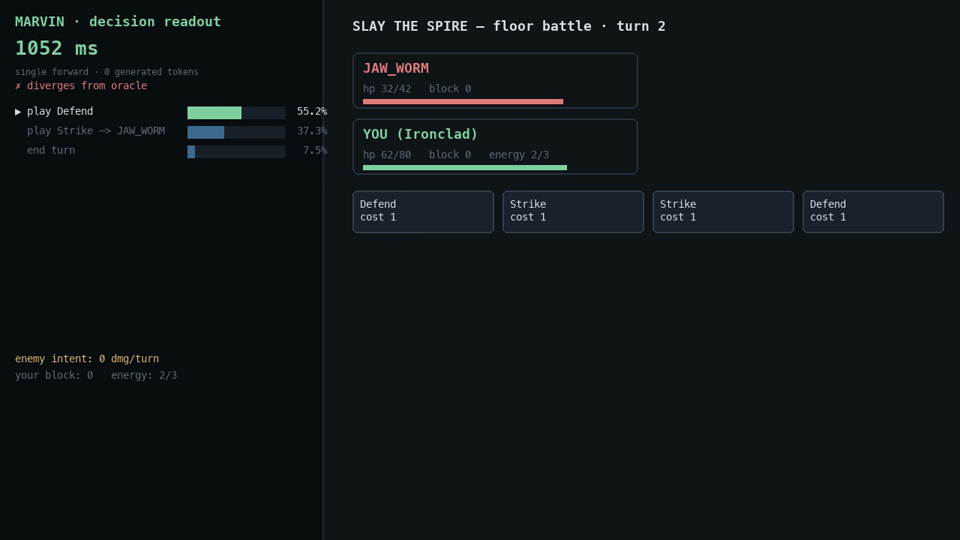
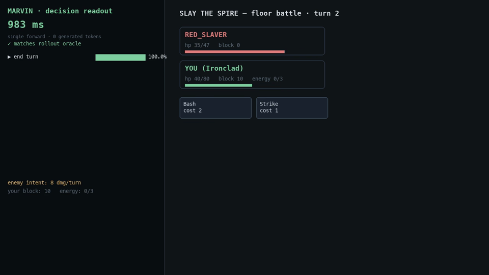
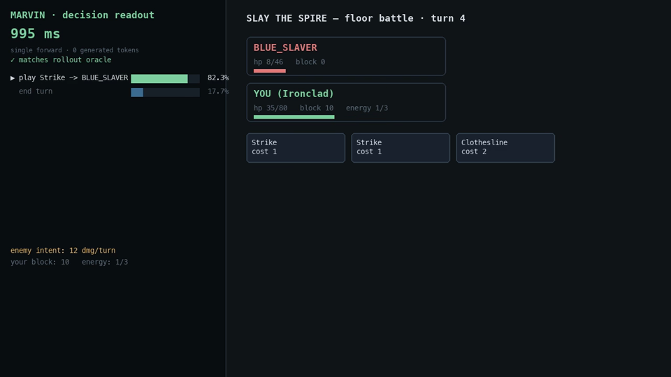

Trio-Flash: Calibrated Decisions in a Single Pass
Agents often need one bounded choice — which queue, which tool, is this prompt an injection. Trio-Flash answers with real probabilities in a single forward pass and generates no text. On our frozen decision benchmark it matches a hosted frontier decision model on accuracy, with 3.3× better calibration — running on one machine, fully local.
1 · The decision, not the paragraph
Generative models are optimized to continue text. When software has to pick — route a ticket, gate a tool call, grade a message — you pay for tokens, latency variance and a parser, and you get a string instead of a probability. Trio-Flash is a model that chooses once: given a state and 2–8 allowed actions, it returns a probability for every action and a disposition.
2 · What Trio-Flash is
Input state plus a closed candidate set → decision, full probability distribution, and a
disposition (auto_decide / review / abstain) driven by measured
risk–coverage thresholds. What it does not do: generate free text, answer outside the given
candidates, or pretend certainty it does not have. It is a frozen foundation adapted with small
trainable modules; every decision is one model pass.
3 · One pass through the model
The readout scores the allowed choices directly at the candidate-token position: one forward pass, softmax restricted to the candidate letters, argmax decides, zero tokens generated. That is why latency is deterministic (no decoding) and why the model cannot answer off-schema. Calibration is part of the contract: probabilities are temperature-fit on held-out training data, and the disposition layer refers low-margin cases to a human instead of guessing.
4 · What we measured
We built a frozen 192-item decision benchmark — routing, tool gating, prompt-injection guarding — with identical inputs and allowed choices for every system, and scored with identical formulas. Our reference point sanity-checks the ruler: the hosted model scores on our items almost exactly what it publishes on its own.
| System | Accuracy (same items) | ECE 15-bin | Latency |
|---|---|---|---|
| Trio-Flash (local, single pass) | 95.31% | 0.031 | ~1.1 s |
TypeSafe Jev jev-latest (hosted API) | 93.23% | 0.102 | 0.19 s p50 |
On our frozen 192-item decision benchmark, Trio-Flash answered 95.31% correctly; TypeSafe Jev
(jev-latest, hosted API) answered 93.23% under the same inputs and allowed choices. The
paired difference was not statistically significant — exact McNemar p = 0.388 — so this
result supports accuracy parity, not an accuracy win. The clearer observed difference
was calibration: 15-bin ECE was 0.031 for Trio-Flash and 0.102 for Jev — 3.3× lower under
this protocol. These are measurements on our benchmark, not universal rankings; the systems expose
probabilities through different interfaces. Trio-Flash is not affiliated with or endorsed by TypeSafe.
5 · Confidence is part of the output
Accuracy alone is a half-product. On a separate far-out-of-distribution probe (600 items from a
game state space the model never trained on), confidence separated in-distribution from
out-of-distribution inputs with AUROC 0.971. Referring the least-confident 10% cut the
observed error rate from 4.7% to 1.7% at 90% coverage. The disposition layer
(auto_decide / review / abstain) turns that curve into a runtime
contract: you choose your risk budget, the model keeps it.
6 · A lane outside the training domains
Decision models should adapt overnight to new domains. As a stress test we minted a lane from Slay the Spire: states come from the game engine, labels from deterministic engine rollout values — never model self-grading. An experimental lane trained overnight from engine-generated states reached 54% held-out accuracy (paired +18.3 points over the base system on the same states), and the recorded match plays it honestly: 56 real decisions, 3 wins out of 3 fights, every probability bar and every mistake visible.



7 · What this result does not establish
No demonstrated accuracy advantage over the hosted reference — parity, measured once, on our
benchmark. The abstention curve covers a far-OOD probe only; near-OOD behavior is under
evaluation. Labels come from our deterministic generators, which share a distribution with our
training data. Local latency (~1.1 s) and hosted latency (0.19 s p50) are not directly comparable —
different hardware, different network positions. And the model is not a sole safety control:
treat review and abstain as referral, never as permission.
8 · Private research beta
Trio-Flash runs as a local, self-contained decision API: bearer auth, per-client rate limits, queue backpressure, structured JSONL audit logs — prompts are not logged by default. Beta access starts with the three decision families above; bring us a decision your system makes repeatedly.